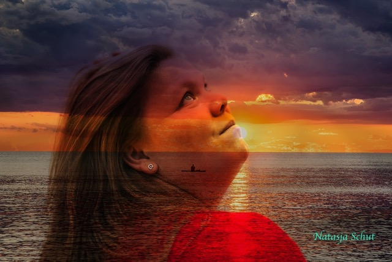

ByNatasja — één verhaal
Ruimte voor
jouw verhaal.
Schrijver, reiziger, ondernemer— en iemand die gelooft dat elk verhaal het verdient om gehoord te worden.
Welkom in mijn wereld
Alles wat ik maak, begint met een verhaal.
ByNatasja is de plek waar mijn werk, creativiteit, woorden en dromen samenkomen.
Over mij
Hello!
Ik ben
Natasja.
Hi, ik ben Natasja.
Een creatieve, gezellige en nieuwsgierige vrouw die graag nieuwe dingen ontdekt, mensen helpt en haar eigen weg probeert te vinden.
Ik ben iemand die graag voor anderen klaarstaat en het fijn vindt om mensen te helpen.
Tegelijkertijd leer ik steeds meer dat ik niet overal en altijd “ja” op hoef te zeggen. Door de jaren heen ben ik veranderd, gegroeid en steeds meer gaan ontdekken wie ik zelf ben en wat bij mij past.
Reizen, creativiteit, nieuwe dingen leren en bezig zijn met mijn eigen ideeën geven mij veel energie. Ik vind het mooi om iets te creëren en vervolgens te zien dat iemand anders daar ook iets aan heeft.
ByNatasja is een stukje van mij. Een plek waar mijn creativiteit, ideeën, verhalen en werk samenkomen.
Ik ben nog volop aan het ontdekken en bouwen. Niet alles hoeft in één keer perfect te zijn. Ik geloof juist dat je met kleine stappen iets moois kunt opbouwen.
En dat is precies wat ik met ByNatasja wil doen.
The house of ByNatasja
Vier werelden.
Eén hart.
Verschillende richtingen, verbonden door één persoonlijke visie.
ByNatasja
Mijn persoonlijke merk en de plek waar alles samenkomt: mijn verhaal, werk en creativiteit.
02 — DIGITAL STUDIONova
Webdesign, digitale ondersteuning en creatieve richting voor ondernemers met een visie.
03 — STORIES & WORDSNatasSpeaks
Verhalen die raken, inspireren en ondersteunen bij het leven, ondernemen en groeien.
04 — SLOW TRAVELTravelByNatasja
Mijn liefde voor reizen, schoonheid en de inspiratie die ontstaat wanneer je nieuwe plaatsen ontdekt.

Mijn leven
De wereld
als inspiratie.
In mijn dagelijks leven geniet ik van de kleine en grote momenten. Ik ga graag uit met vrienden, ben veel met mijn vriend en breng tijd door met mijn familie.
Reizen is voor mij een enorme bron van inspiratie en schoonheid. Het laat mij anders kijken en geeft mij steeds nieuwe verhalen om te vertellen.
NatasSpeaks
Verhalen
die blijven.
Een plek voor woorden over ondernemen, leven, groei en vrijheid.
De moed om opnieuw te beginnen
Over loslaten wat vertrouwd is en ruimte maken voor wat nog geen naam heeft.
LevenWat stilte mij leerde
Een brief aan de versie van mij die dacht dat rust tijdverspilling was.
OndernemenJe merk mag menselijk zijn
Waarom vertrouwen vaak begint wanneer je ophoudt perfect te willen lijken.
Jouw volgende hoofdstuk
Wat maakt mij anders?
Uitleg
Er zijn natuurlijk veel mensen die vergelijkbare diensten aanbieden. Daarom wil ik niet zeggen dat ik de enige ben die dit kan. Wat ik wél belangrijk vind, is de manier waarop ik met iemand samenwerk. Ik luister naar wat jij nodig hebt en neem de tijd om te begrijpen wat je wilt bereiken. Misschien weet je precies wat je wilt, maar misschien heb je juist nog helemaal geen idee. Ook dan kunnen we samen kijken naar de mogelijkheden. Ik vind het belangrijk dat iets niet alleen mooi of goed gemaakt is, maar vooral dat jij er uiteindelijk blij mee bent. Daarom werk ik persoonlijk en stap voor stap. Heb je iets anders in gedachten? Dan kijken we samen hoe we dat kunnen aanpassen. Mijn doel is niet om zomaar iets voor je te maken. Mijn doel is om iets te maken dat bij jou past.
Bynatasja.business@hotmail.com ↗